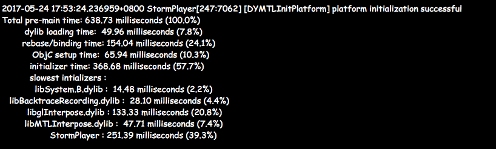

# 一次优化App启动速度的体验
应用的启动过程
-
连接和装载
-
UIKit初始化
-
应用程序回调
-
开机动画展现
理论 - main()函数执行前发生的事情
Mach-O格式
文件类型
Executable—— 应用对应的二进制文件Dylib—— 动态库，例如: DSOs/DLLsBundle—— 不能被链接的动态库，只能在运行时用dlopen()函数加载，例如：插件
image —— 可以是上面提到的三种类型中的任何一种
Framework —— 以一定目录结构组织资源和头文件的一种动态库
Mach-O镜像文件
通常被划分成段(segment)：__TEXT、__DATA、__LINKEDIT
一个段通常由多个页(page)构成，页大小由硬件决定，arm64机器上的页是16KB, 其它机器上的页大小为4KB。
区域(section)是段(segment)的局部，编译器一般不会考虑这个概念。它们彼此之间不能重叠。
__TEXT段是二进制的头部，用来存放Mach头信息、机器命令或者常量，只读。
__DATA段存放全局变量，可读写。
__LINKEDIT段包含怎么装载程序的元数据, 像函数、变量的名称和地址。
Mach-O Universal文件
把针对不同平台的多个Mach-O文件合并到一个文件里面，有一个Fat Header信息区存放所有架构和对就的二进制数据在整个文件中的偏移地址。
虚拟内存基础
软件中的问题都可以通过添加中间层来解决，虚拟内存就是为了解决不同进程的逻辑地址灵活的映射到物理内存地址的问题而存在的。不同进程的逻辑地址可以被虚拟内存系统映射到不同或者相同的物理内存中，从而实现互斥或共享的功能。我们前面所提到的动态库在不同进程间的共享就可以以这种方式进行。每一个页都可以被设置为读、写、执行的任意组合来限制其访问权限。
ASLR —— 地址空间布局随机，镜像被加载进内存空间中的随机位置
代码签名 —— 每一页的数据都被哈希算法处理过，当页面加载进内存时会被校验，这些哈希值都被存放在__LINKEDIT段中，这样就可以确保校验每一页数据，保证程序运行的安全性。
Mach-O二进制文件如何加载和准备
Exec() —— 是一个系统调用。
dyld —— 负责加载动态库。
系统把应用映射到内存后会加载dyld来负责加载应用依赖的其它动态库。
- 分析出应用运行需要依赖的动态库。从已经加载的应用程序的头部信息中获取。
- 查找所有依赖的动态库的位置，找到对应的Mach-O文件，打开并校验代码签名。
- 注册依赖库的代码签名到内核中，之后调用
mmap映射动态库的每一个段到物理内存中。 - 在这个加载依赖库的过程中，依赖库本身也会依赖其它的库，所以这个过程会递归执行。在加载的过程中，一些已经加载的库不会被重新加载，大部分都是系统库。
Rebasng And Binding
Rebasing —— 由于应用是被随机加载到物理地址里的，所以一些内部地址需要重新计算一下对应的偏移量来调整正确指向。
binding —— 应用内的指针指向应用外部的符号，找到这个外部符号后，需要将这个指针与这个符号的对应地址进行绑定。
Objective-C 是一种动态类型语言，它定义的所有类都在一个全局表中注册后使用。
Unique Selector
感觉和类方法是等价的。 +load() 或者 +initialize()
实践
怎样测量时间
不同平台的标准不同，但大致上iPhone(400ms)、iPad(500ms)以内是一个不错的标准。因为应用被打开时，系统会有一段动画来完成平滑过渡，在这段动画时间内都可以算是不错的启动时间。这个动画的时间大致是400ms。应用如果启动时间超过20s会被系统杀死。
如果应用启动太慢，系统看门狗会结束应用，XCode调试时不启用系统看门狗。
| 场景 | 看门狗定时 |
|---|---|
| 启动 | 20秒 |
| 后台恢复 | 10秒 |
| 挂起 | 10秒 |
| 退出 | 6秒 |
| 背景任务 | 10分钟 |
热启动和冷启动
-
热启动 —— 应用已经在内存的情况下被调起
-
冷启动 —— 应用完全不在内存或缓存中的情况下被调起
我们测量启动时间是以冷启动时间为准的。这通常需要重新启动设备。
测量main()函数调用前所花费的时间
Dyld有内建的测试机制。可以在项目中设置DYLD_PRINT_STATICTICS为1来开启统计功能。
设置项目的启动时间统计相关的环境变量，如下图：

需要机器重新启动后，确保测试时长比较准确，即冷启动。
冷启动统计结果如下图:

优化启动时间的方法
- 避免链接不必要的framework
- Optional类型的framework会使链接器有一些额外的消耗，尽量少用
- 避免创建全局C++对象，避免在
+load()方法中运行代码(类加载时)，而放到+initialize()中(类被首次初始化时会被调用) - 把应用引入的动态库合并后进行加载。
- 使用
dlopen把库的加载时机推迟一些，但不推荐，因为会引起很多问题。 - 尽量使用swift，因为swift考虑了这些因素。
- 减少Objc的类的数量
- 编译器选项添加`Wglobal-constructors
- 排除静态初始化
参考视频：